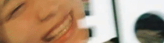
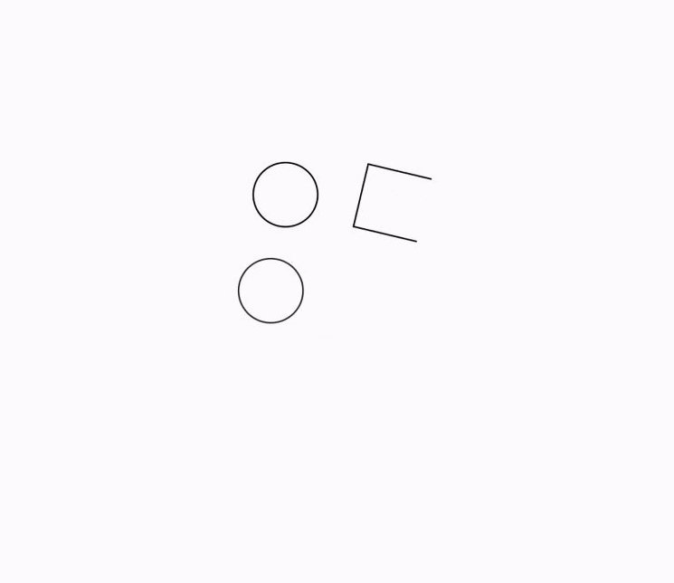

credits: jpegzilla vi - 2020 ~ 2022
this is a list of things and people that I drew inspiration and resources from during the production of this website. I would never have reached my current level of skill without these.
if you look closely at my website and the other things I've made, these people's blood runs through it all.
so thanks to:
- edd wainright, for the wipeout series visual design inspiration. https://www.1280x720.co.uk (unarchived and currently inaccessible - as of 2021 09 06, sorry!!) current site (archived, ask me if it goes down and you need it) - contains most of edd's wipeout work
- emma essex, for her halcyondaze album / visual experience - massive inspiration
- dv-i, for website inspiration / visual design / music
- porter robinson, for the virtual self music project / lots of typography inspiration
- hannah diamond, for everything in the "hi" music video
- ha55ii, for giving me a distraction when I didn't wanna work on my website. deobfuscating the source code of this game has been a really fun project! oh, and the game is great, too!
- EMPiRE, for the cool text animation in the "I don't cry anymore" music video 
- tia newbury, for the 'noise.png' texture used on this site (original file name: 'binding-dark.png')
- dan voinescu, for some incredible ui inspiration
- loona, for their logo animation that inspired my 'moon' motif on this site 
- hock wah yeo, for teaching me more about translation between the digital and natural worlds
other credits:
mutant standard this website uses mutant standard emoji, which are licensed under a creative commons attribution-noncommercial-sharealike 4.0 international license.